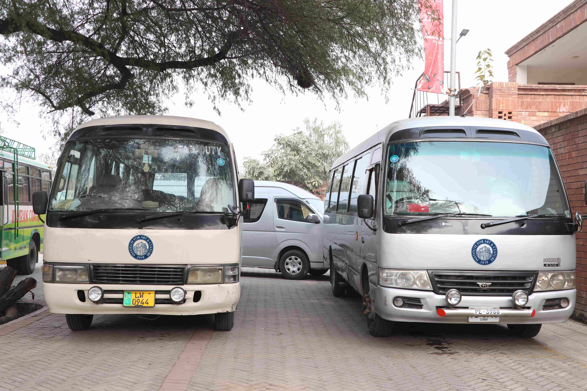
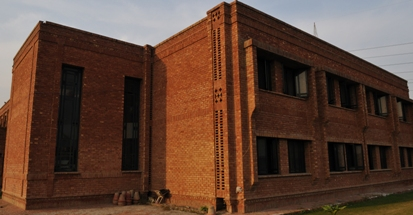
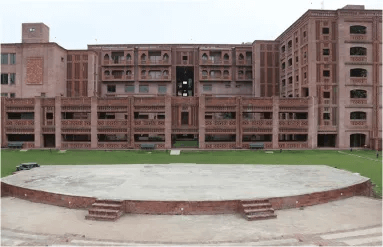
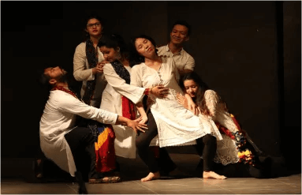

Situated in the heart of Lahore, the Institute for Art and Culture (IAC) is more than just an educational institution; it's a doorway to the diverse and rich cultural heritage of Lahore. Known as the cultural capital of Pakistan, Lahore is a city where tradition and modernity blend seamlessly, offering an endless array of inspiration for our students. From the majestic Lahore Fort to the bustling streets of the Walled City, every corner of Lahore tells a story, making it an ideal setting for nurturing creative minds.
Campus & City Life
Getting Around
The IAC campus is a dynamic space designed for ease of navigation and accessibility. From state-of-the-art studios to serene outdoor spaces, each area of the campus is thoughtfully laid out to inspire and facilitate learning. Our virtual campus tour ensures that new students can easily find their way around. Whether it's by bus, rickshaw, or taxi, students can easily commute to and from the campus. The institute is also conveniently located near major transit points, making it accessible from various parts of the city.
Transportation at IAC
Getting to and from the IAC campus is easy and convenient, thanks to Lahore's well-developed transportation network. Our campus is strategically located to ensure that whether you're coming from within the city or commuting from outside, your journey is as smooth as possible.
Lahore's public transportation system, including buses and the metro, offers efficient and affordable options for daily commutes.Lahore's public transportation system, including buses and the metro, offers efficient and affordable options for daily commutes. Additionally, ride-hailing services like Uber and Careem are readily available, providing flexible and convenient transportation alternatives. For those who prefer cycling, bike rental services are also accessible, promoting a healthy and eco-friendly way to travel.
Hostel Facility
At the Institute for Art and Culture (IAC), we understand that a comfortable and secure living environment is crucial for our student's academic success and overall well-being. That's why we offer On-Campus accommodations.
Our on-campus dormitories are more than just a place to sleep; they are vibrant communities where students from diverse backgrounds come together to share experiences and ideas. Equipped with essential amenities and supervised by dedicated staff, these residences ensure a convenient and hassle-free living experience right at the heart of the campus.
Facilities & Activities

Amphitheater

Auditorium

Botanical Garden

Exhibition Gallery
Library

Sports Complex
Computer Lab